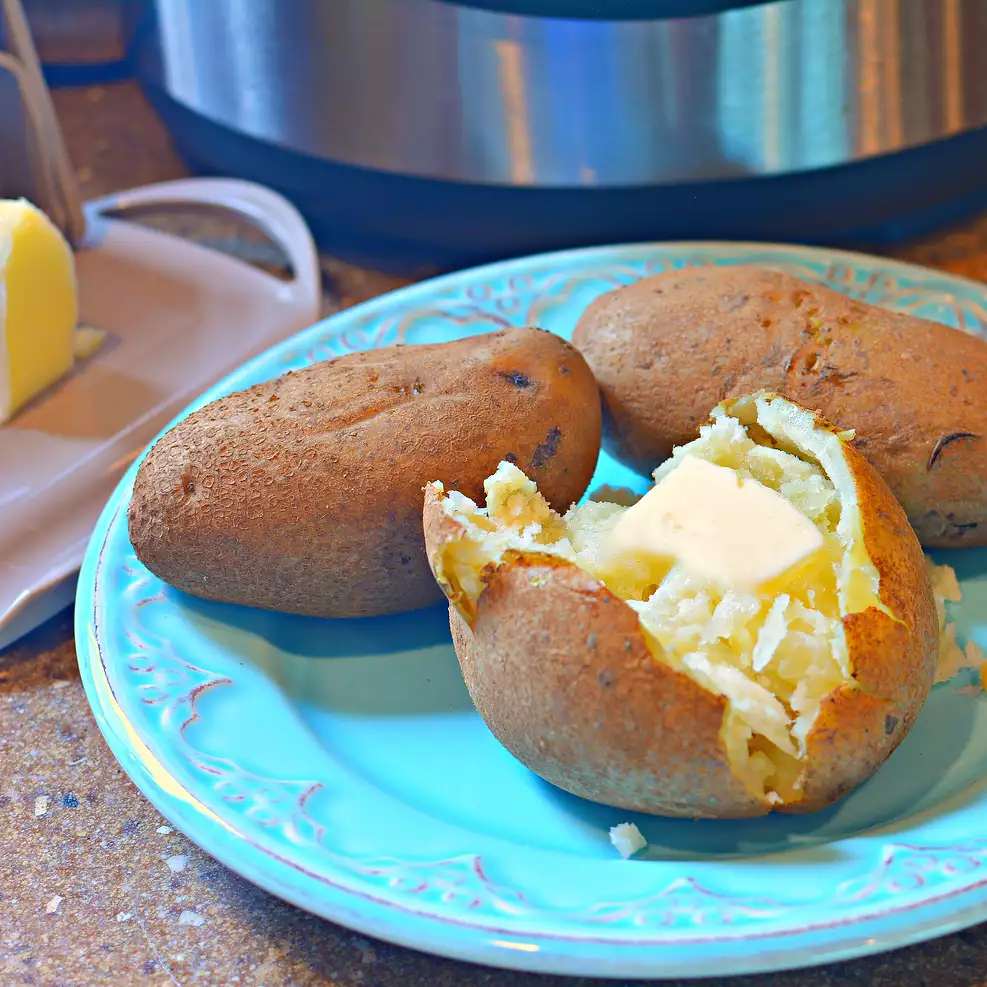

Instant Pot Potatoes
back to home
Your kitchen has no oven? Craving for that buttery-potato-goodness of baked potatoes? All-you-can-do INSTANT POT will save the day!

Description
Skin-on, golden-brown Russet baked potatoes that is not baked but INSTANT-POTTED.
Ingredients
- 2 cups of water
- 8 russet potatoes, scrubbed
Steps
- Pour water into the bottom of your INSTANT POT. Place a trivet into the pressure cooker and turn the heat on high.
- Place potatoes in a single layer in the INSTANT POT and lock the lid. Cook over high heat until the pressure regulator reaches 15 psi, 5 to 10 minutes. Remove from heat. Allow pressure to drop naturally, 10 minutes. Unlock and remove lid.
Your INSTANT-POTTED potatoes ready to serve and eat! Dip in butter to treat your taste buds.